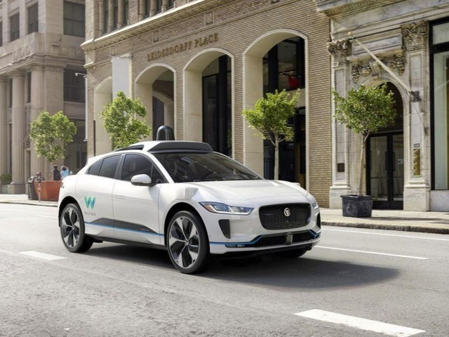

from a variety of risks.

Singularity Package
Integrated liability coverage engineered for automation and robotics developers, operators, and service providers across all industries and use cases. The package includes Tech E&O, Cyber, Product, and General Liability. Learn More
Technology Errors
& Omissions

Cyber Liability
Protect your company from losses arising from cyber hacks to your systems which could lead to first-party (your company) or third-party (your customers) damages. Learn More
Product Liability
Protect your company from losses arising from defects and deficiencies, including products that could lead to third-party bodily injuries or property damages. Learn More
General Liability
Protect your company from losses arising from accidents on your premises, including offices, warehouses, laboratories, test fields, and more. Learn More
Commercial Auto
Protect your company from losses arising from third-party property damages and injuries to vehicle occupants, including automobiles that you own or lease. Learn More
Inland Marine
Protect your company from losses arising from damages to equipment, materials, or products. This covers damage in-transit, on-land, or during storage at a third-party premise. Learn More
Intellectual
Property Coverage

Umbrella/Excess
Protect your company from losses arising from liability exposure with no underlying coverage, or in cases where you need to increase limits for underlying policies. Learn More
Directors & Officers
Protect your company from losses arising from wrongful acts of directors and officers, including lawsuits brought by customers, employees, vendors, investors, competitors, or other parties. Learn More
Employment Practices
Liability Insurance

Workers’
Compensation
Get Covered with Singularity Package
Comprehensive liability coverage for developers, operators, and service providers. Powered by unparalleled technology and industry expertise.
Latest News

10 Feb 2021 We offer integrated coverage products for a wide range of autonomous technology
10 Feb 2021 We offer integrated coverage products for a wide range of autonomous technology
10 Feb 2021 We offer integrated coverage products for a wide range of autonomous technology